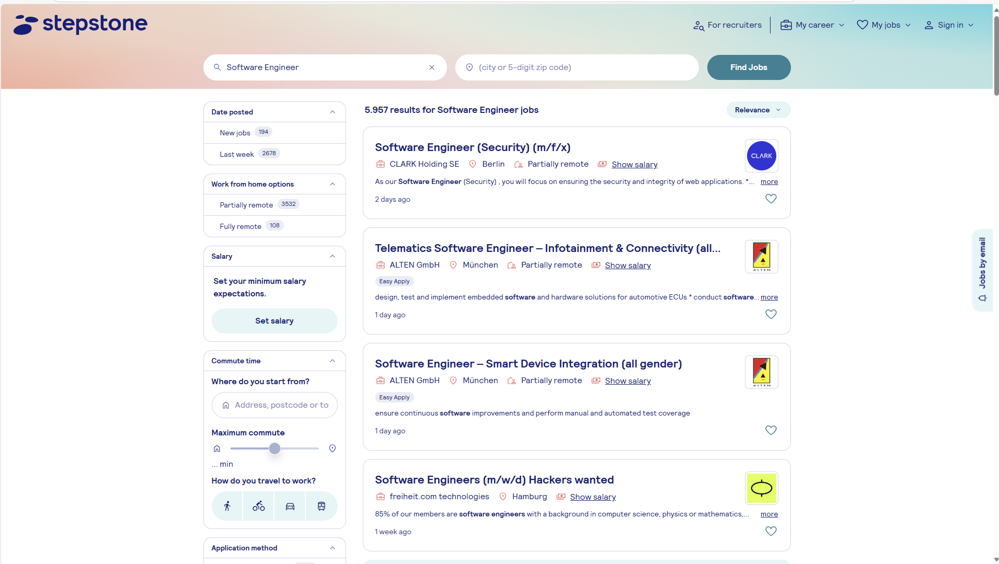
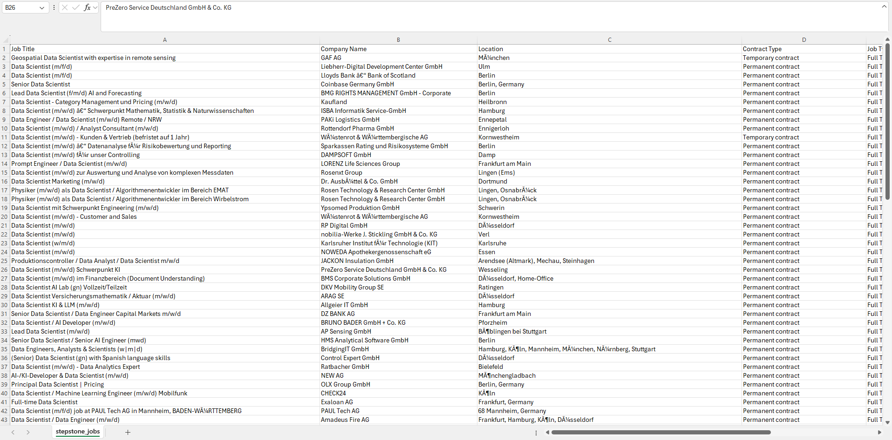
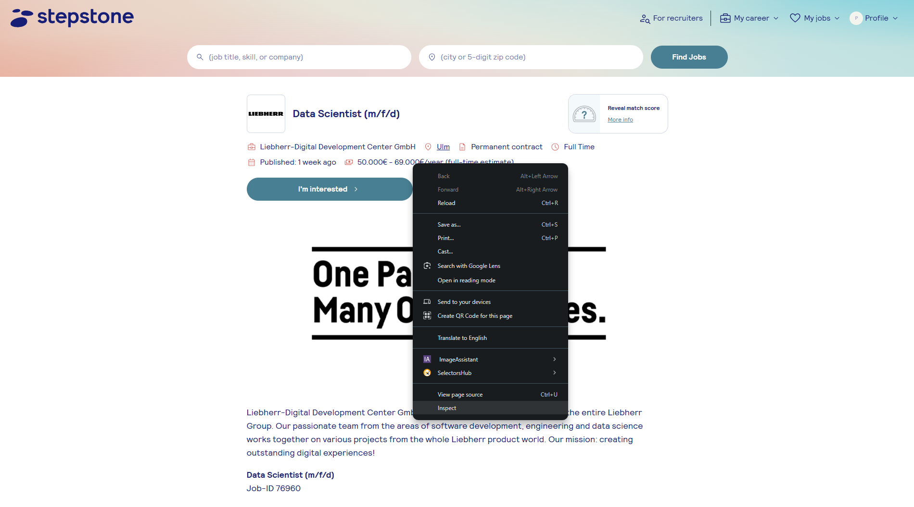
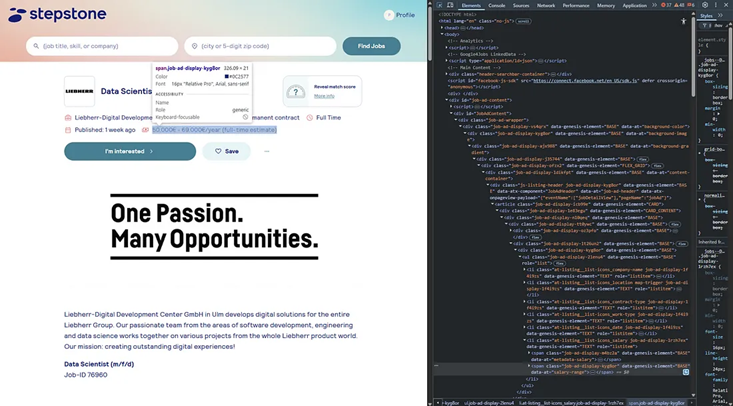

While working on a project, I needed to web scrape data from websites. Before targeting the actual website, I practiced on a similar one — StepStone. Here’s how I did it, so you can too
Web scraping, web harvesting, or web data extraction is data scraping used for extracting data from websites. Web scraping software may directly access the World Wide Web using the Hypertext Transfer Protocol or a web browser. While web scraping can be done manually by a software user, the term typically refers to automated processes implemented using a bot or web crawler. It is a form of copying in which specific data is gathered and copied from the web, typically into a central local database or spreadsheet, for later retrieval or analysis.
Web Scraping is a cost-efficient way to get the Unique Dataset directly from the website. Many advanced paid scrapers and APIs can be used to get the details. Using Python to scrape data and create your own dataset is incredibly rewarding for any data enthusiast.
The most popular way of scraping the website is using BeautifulSoup and Requests Libraries writing a python script. But that won't work on a dynamic website where there is JavaScript-heavy content. Here comes Selenium, which can be used for scraping the JavaScript-heavy websites. Other widely used Libraries are Playwright and Scrapy preferred for large projects.
Stepstone is mostly Javascript rendered, and we can use Selenium to get the visible contents on the website. We’re interested in extracting the salary details of each job and additional relevant features
When we are searching the keyword and the city or blank. We are getting the details like “Job Title”, “Company Name,” “City,” etc. We can get more details in a specific tab if we click the Jobs tab. So it's like humans interacting with the website. To make this happen, we need to use Selenium. Selenium gives the website a Human feeling. It can be used to click the link, select the drop-down and move through the tabs, etc.
We need to have a csv file with all the details as below
The Python script will search all the keywords required by going through each job posting page and collecting all the required details in that tab and then closing each tab without any human interaction.
It is quite simple. Let’s assume you have seen some text on the webpage and you would like to scrape it. Elements on a web page reside in a hierarchy. You just need to tell your code the “address” of the element within that hierarchy.
Let's check the Salary Range on the page. Right-click the desired item and click the inspect option to see the HTML code. On the left-hand top, there is an arrow mark indicating the inspect of the element. Just click and click on the desired element to see the code highlighted.
 We are not bothered about the full code. We just need to see which are the selectors that we can choose and retrieve the text. Here we have XPATH, and using XPATH, we can retrieve the text.
try:
salary_range = driver.find_element(By.XPATH,'//span[@data-at="salary-range"]').text
except NoSuchElementException:
salary_range = -1
if you understand what we’re doing here. It means that you can easily scrape almost any website you like. There are many selectors that we can use similar to XPATH, like ID, CSS_SELECTOR, CLASS_NAME, etc
Some fields will not always be available on the website. For Example, the Salary range, so we need to go for exception and give a fixed value.
You can download the code from the below links.
Github KaggleIf you are able to understand the above details and if you have basic Python knowledge, you can easily go through the code with comments. Now, I shall explain to you the issues I faced during coding.
If you are running the code as it is, then you need to create a .env file where you need to save a valid email and password registered with stepstone. I have created an email ID and password for this purpose so that I can log in. Then, the question arises as to why I need to log in. I need to log in so that I can get the salary range details. If you don’t want a Salary range, then you can skip that step where logging is enabled. Below is the code for logging in.
# Signing in for getting the Salary Info. Can skip this step if salary info is not required.
driver.find_element(By.XPATH, "//div[normalize-space()='Sign in']").click()
driver.find_element(By.XPATH, "//span[@class='hf-provider-gxei9d'][normalize-space()='Sign in']").click()
username_field = driver.find_element(By.CLASS_NAME, "login-registration-provider-1wuqtqx")
password_field = driver.find_element(By.CLASS_NAME, "login-registration-provider-1g1vgpu")
username_field.send_keys(username)
password_field.send_keys(password)
login_button = driver.find_element(By.CLASS_NAME, "login-registration-provider-1k4ab3x")
assert not login_button.get_attribute("disabled")
login_button.click()
time.sleep(random.uniform(2, 5))
Whenever you visit the site, you need to accept the cookies. So have accepted the cookies using the below code.
Accepting the Cookies File
try:
driver.find_element(By.ID, "ccmgt_explicit_accept").click()
except NoSuchElementException:
pass
An Akamai error typically refers to an issue encountered while using Akamai’s content delivery network (CDN) or web security services. Akamai is a company that provides services like content caching, website acceleration, cloud security, and DDoS protection for websites and apps.
Companies don’t like people to scrap their websites, so they are using different techniques to block the user. This is one of them.
I have used the code below to bypass the error. Also have used a few auto refresh and time sleep with random value to bypass the detention. Not sure which one helped.
# Checking for Akamai Edge Error and Skipping it.
if "Reference #" in driver.page_source and "edgesuite.net" in driver.current_url:
print("Akamai Edge error detected. Retrying once after delay...")
time.sleep(2)
driver.refresh()
WebDriverWait(driver, 10).until(
lambda d: "Reference #" not in d.page_source or "edgesuite.net" not in d.current_url)
time.sleep(random.uniform(2, 5))
if "Reference #" in driver.page_source:
print("Persistent Akamai error. Skipping this session.")
if len(driver.window_handles) > 1:
driver.close()
driver.switch_to.window(driver.window_handles[0])
else:
print("No secondary tab to close. Continuing.")
Even though there API for scraping the website, it is a best practice to try Python web scraping using Selenium. Using Python, we will have better control over what is to be scraped. Also, we don’t need to pay for the API’s. Since the companies are heavily checking on automation bots and blocking it frequently. This method is not suggested for creating large datasets.
Hope you enjoyed reading and have learned something from this post. Happy coding.
🚀 Cheers to Your Learning Journey!